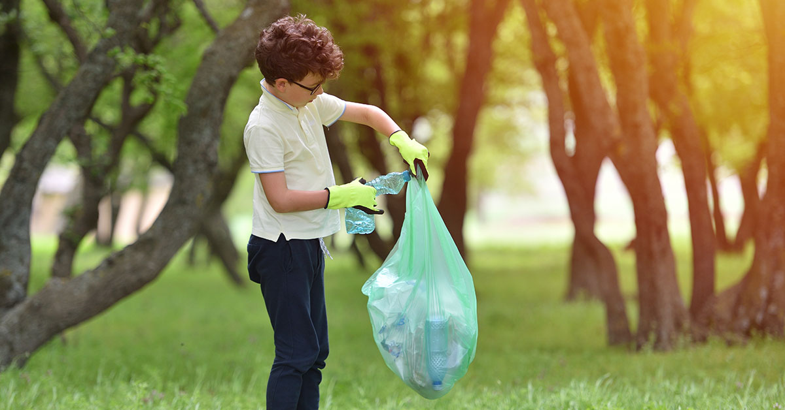

O ODS 15 prevê, em diversos momentos até 2030, algumas metas importantes. Dentre elas: a possibilidade de, em um curto período de tempo, assegurar a conservação, a recuperação e o uso sustentável de ecossistemas terrestres e de água doce interiores, além de seus serviços.Isso deve acontecer, em especial, nas florestas, nas zonas úmidas, nas montanhas e nas terras áridas. Tudo isso em conformidade com as obrigações decorrentes dos acordos internacionais Também existe a previsão de que se promova a implementação da gestão sustentável de todos os tipos de florestas. Com isso, a intenção é deter o desmatamento, restaurar as florestas degradadas e aumentar substancialmente o florestamento e o reflorestamento em todo o mundo.
Outro aspecto destacado é o combate à desertificação e a restauração da terra e do solo degradado. Isso inclui terrenos já afetados pela desertificação, por secas e inundações, além da necessidade de lutar para alcançar um mundo neutro em relação à degradação do solo. Também é necessário, até 2030, assegurar a conservação dos ecossistemas de montanha. Claro! Afinal eles são essenciais, incluindo a sua biodiversidade. Afinal, o planeta tem a capacidade de proporcionar benefícios que são importantes para o desenvolvimento sustentável. Ainda são necessárias, de acordo com este objetivo, as tomadas de medidas urgentes e significativas para reduzir a degradação de habitats naturais. É importante estancar a perda de biodiversidade, protegendo e evitando a extinção de espécies ameaçadas.
A economia circular tem importância social pois busca maximizar os recursos e minimizar o impacto ambiental, ao mesmo tempo em que gera empregos e cria novos negócios. Além disso, ela pode ajudar a reduzir a desigualdade econômica ao oferecer oportunidades para comunidades e empresas de baixa renda. Também pode contribuir para a segurança alimentar, ao usar fontes de alimento e nutrientes de maneira mais eficiente. “É essencial repensarmos a forma como produzirmos, pois os consumidores já estão atentos nas demandas sustentáveis e dispostos a adquirirem bens de consumo que sejam melhores para o meio ambiente. Ações como estas são boas para os negócios e ainda melhores para o planeta", destaca Lilian Silva, estagiária de Economia Circular da Abrasel. Em resumo, esta pode ser uma ferramenta importante para alcançar desenvolvimento econômico sustentável.
As questões econômicas e sociais e a preservação da vida terrestre no ODS 15 Porém, além das intenções referentes à proteção, é necessário compreender que a interação com a terra é resultado de aspectos sociais, culturais, econômicos e políticos. Também é necessário tomar medidas urgentes para acabar com a caça ilegal e o tráfico de espécies da flora e da fauna protegidas. Mas, para isso, é importante abordar tanto a demanda quanto a oferta de produtos ilegais da vida selvagem. Também se destaca a importância de integrar os valores dos ecossistemas e da biodiversidade ao planejamento nacional e local. Por isso, eles devem fazer parte dos processos de desenvolvimento e das estratégias de redução da pobreza. Essa interação é fundamental em ambientes em que a situação econômica e a pobreza são mais evidentes do que a questão ambiental. Mas, para que haja a possibilidade de se atingir as metas, o ODS também prevê a mobilização e o aumento significativo, a partir de todas as fontes, dos recursos financeiros para a conservação ] e o uso sustentável da biodiversidade e dos ecossistemas. Para isso, é importante reforçar o apoio global para os esforços de combate à caça ilegal e ao tráfico de espécies protegidas. E isso deve se dar, inclusive, por meio do aumento da capacidade das comunidades locais para buscar oportunidades de subsistência sustentável. Embora tantos esforços, os céticos estão sempre de plantão.